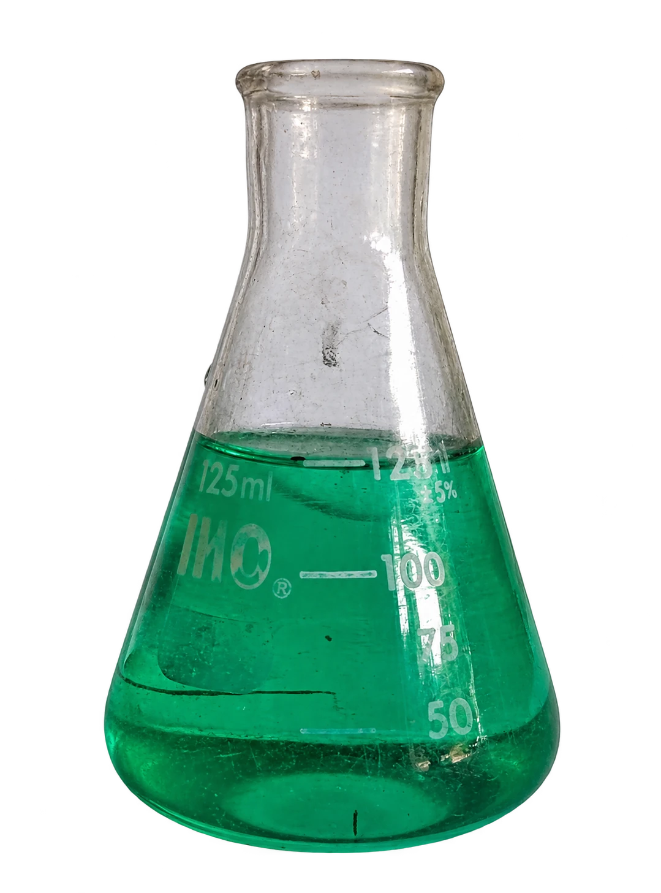
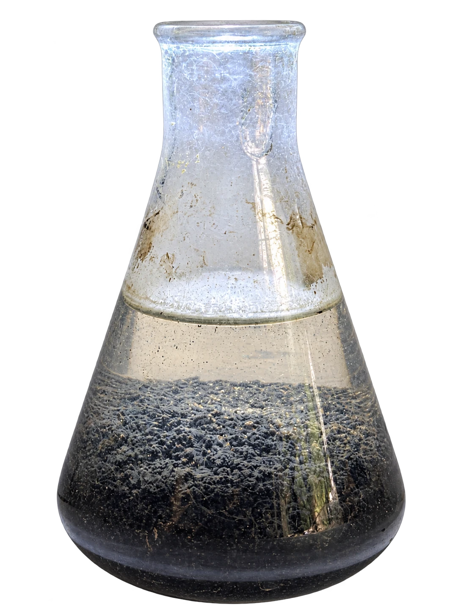
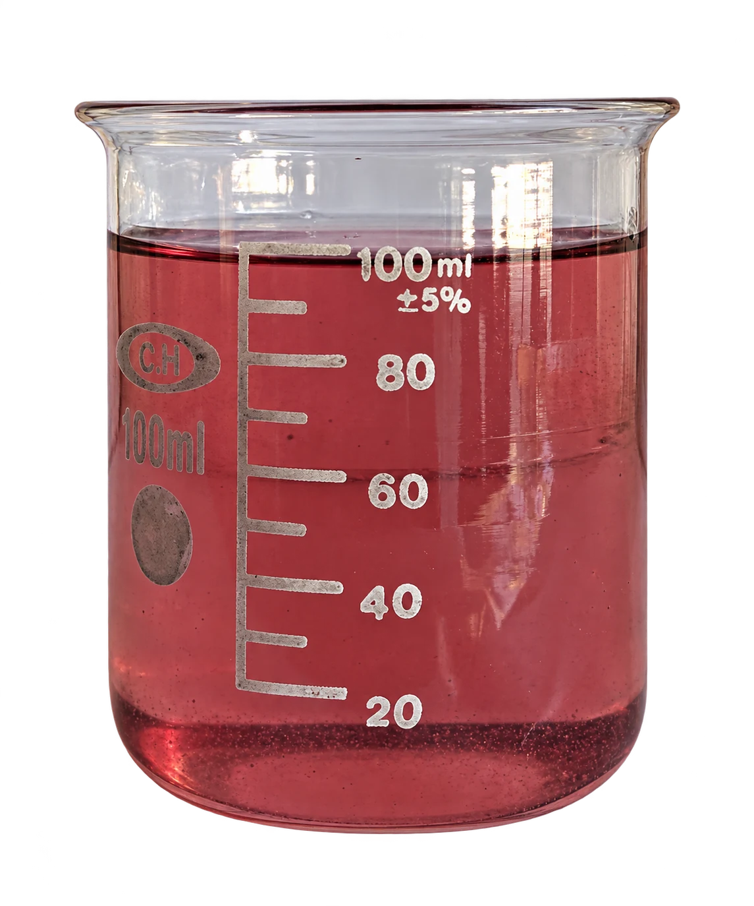
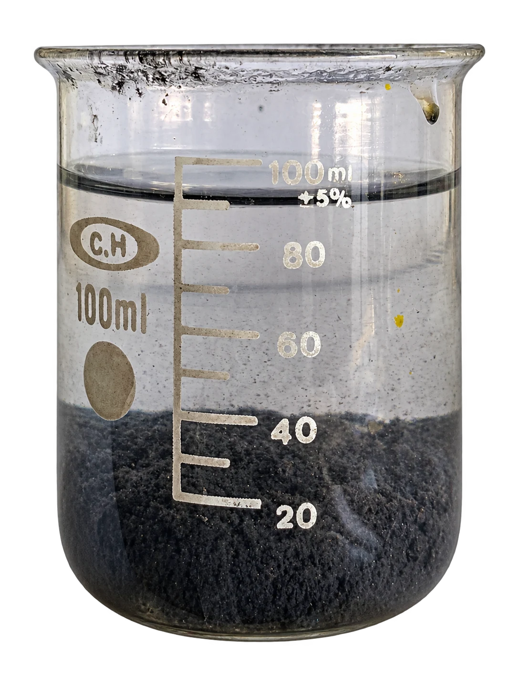
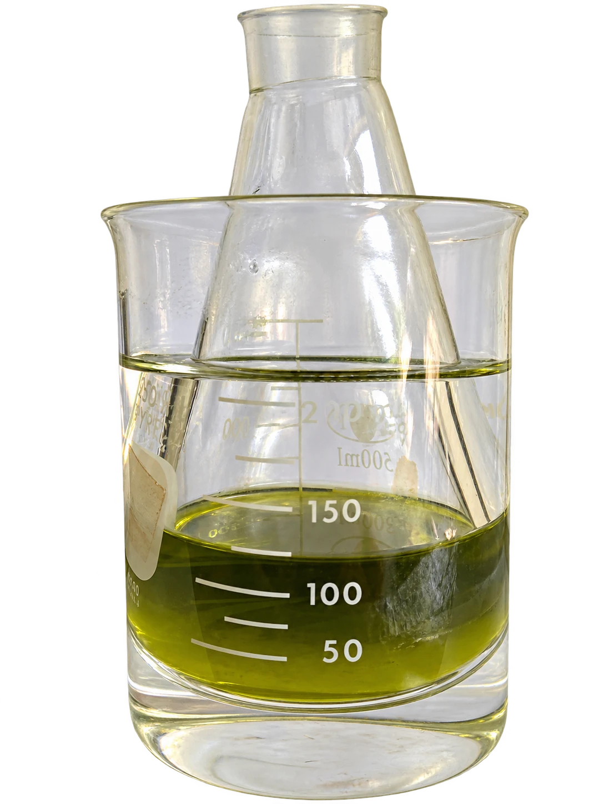
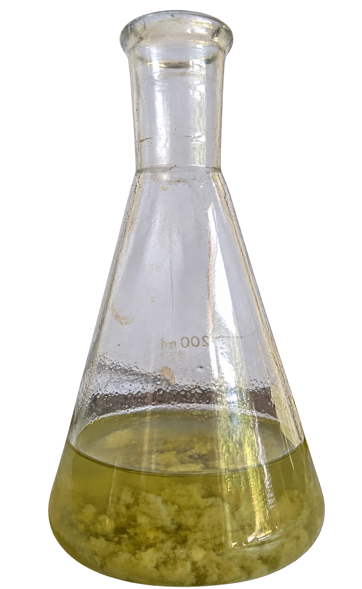
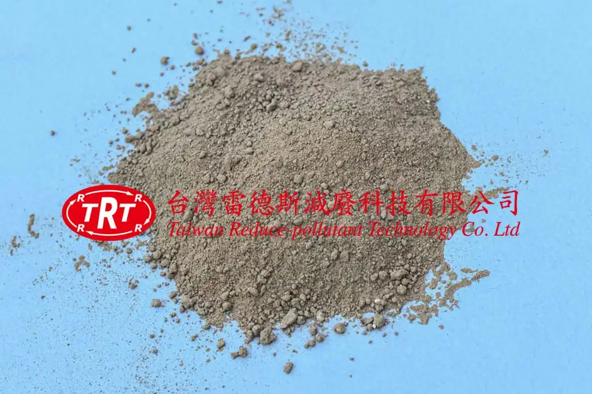

台灣雷德斯提供工業廢水處理藥劑與設備整合，涵蓋高 COD 廢水、化學鎳廢液、鋅鎳合金鍍液與含氰廢水等處理需求。透過實際水樣試驗，評估氧化破除螯合、MC2 金屬捕集及沉澱分離的適用方案；實際成效依水質與檢測結果確認。
從實際試驗，看見加藥反應與沉澱分層的過程。
以四張現場試驗照片，記錄原水、MC2 金屬捕集劑加入後的反應，以及靜置沉澱過程。


依照實際拍攝順序排列。點選階段或使用下一張，查看各階段的試驗外觀。
試驗開始時的廢液呈綠色，記錄處理前的外觀。
照片呈現本次試驗的外觀變化；處理成效與是否符合排放要求，需依水質檢測結果判定。實際使用方案依廢水特性評估。
依線上比例稀釋 20 倍後，以氧化劑搭配輔助藥劑進行破螯合處理，再加入 MC2 金屬捕集劑捕集剩餘金屬，最後靜置沉澱分層。


依照實際拍攝順序排列。點選階段或使用下一張，查看各階段的試驗外觀。
鋅鎳合金鍍液的處理前外觀。
照片呈現本次試驗的外觀變化；處理成效與是否符合排放要求，需依水質檢測結果判定。實際使用方案依廢水特性評估。
以六個階段記錄原水、反應劑一的添加與反應、反應劑二及 pH 調整，以及最後的沉澱分層。


依照實際拍攝順序排列。點選階段或使用下一張，查看各階段的試驗外觀。
本次高濃度氰化物廢水試驗的原水外觀。
照片呈現本次試驗的外觀變化；處理成效與是否符合排放要求，需依水質檢測結果判定。實際使用方案依廢水特性評估。
雷德斯減廢科技所開發的廢水處理藥劑，解決您工廠高濃度COD的處理效率並具穩定度，將製程高濃度廢液廢水降低至放流水標準100mg/L以下；連同其他各項藥劑及設備搭配之不同種類工業廢水廢液處理效果參考如下：
振動研磨高濃度廢液，COD 24000ppm→600ppm以下
電泳漆排水，COD 1000ppm→50ppm
染整定型高濃度COD 8600ppm→600ppm以下
化學鎳老化液高濃度COD處理，46000~62000ppm→數千ppm
磷酸鹽皮膜廢水，COD處理，800ppm→80ppm
國內PCB大廠化學鎳原液，鎳60000ppm→100ppm
多家含鎳製程排水<0.5ppm，低濃度排水添加，可滿足加嚴標準
氟處理劑 化學拋光排水130ppm→<15ppm
硝酸製程排水中的硝酸鹽氮由120ppm降至10ppm，去除率達90%
氰化物高濃度廢液，120000ppm以上→<100ppm，可除99%~99.9%
雷德斯TRT研發的廢水處理設備，具備新型專利設計，且能依客戶目標，從水質、濃度、水量以及設備佔地空間等，客製出滿足客戶整體需求的系統規劃，大幅提升工廠製程廢液的處理效能，豐富的國內外工程實績，優良口碑相傳。雷德斯獨家廢水處理設備，擁有多項競爭優勢與特色，茲舉例如下：
可回收原物料與製程用水
可24小時運轉，降低停工機率
可大幅降低污泥產生量
運轉費用極低、節省人事費用
耐久材設備，比傳統系統使用年限長
模組化設計，可拆卸遷移且佔地小
自動化的人機使用介面
操作維護技術簡單、維護成本低
雷德斯TRT研發新型專利設計
系統回收處理穩定性極高
點選左側類別與品項，右側即時顯示藥劑外觀、適用對象與技術特性。
選擇類別後，點一下藥劑名稱，即可開啟圖片與產品介紹。

專利複配粉劑，具備極強的架橋凝聚作用，對於懸浮固體與溶解性膠體沉降速度極快，適用於高 COD 製程廢水。
以上為「廢水處理」相關技術與藥劑資訊，實際導入方案需依現場水質與產量客製，歡迎直接聯繫我們安排評估。